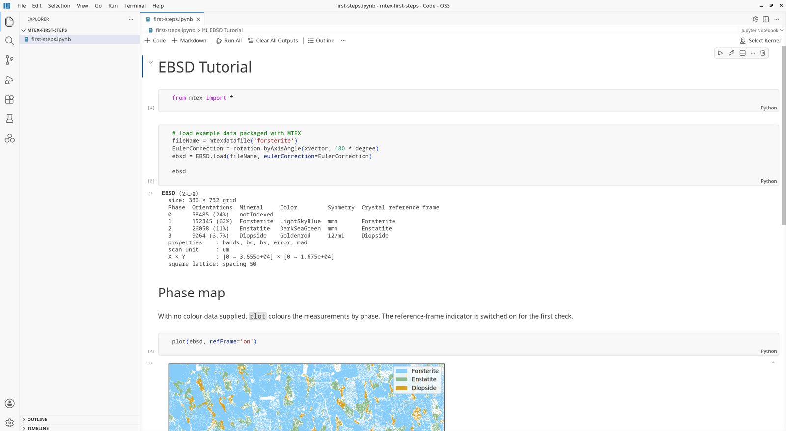

MATLAB comes as one program. In Python the pieces come separately: Python, the language; VS Code, the editor in which you write and run your scripts; and MTEX, installed into the folder of your project. Setting them up takes about fifteen minutes. No MATLAB licence is needed.
If you already work with Python: pip install "mtex[all]" into an environment
with Python 3.12 or later, and continue with step 4.
1. Install Python
Install Python 3.14 from python.org/downloads.
- Windows: on the first screen of the installer, tick Add python.exe to PATH before clicking Install Now.
- macOS: when the installer has finished, double-click Install Certificates.command in the Finder window that opens. Without it Python cannot download the MTEX sample data.
- Linux: Python is usually there already; check with
python3 --versionin a terminal. On Debian and Ubuntu also runsudo apt install python3-venv.
2. Install VS Code
Install Visual Studio Code with its default settings. Start it, click the Extensions icon in the bar on the left (four small squares), and install the two extensions Python and Jupyter, both published by Microsoft. Together they let VS Code run a script piece by piece and show its figures, as the MATLAB editor does with its sections.
3. A project folder with MTEX
- Make a folder for your analysis, for instance
Documents/mtex-first-steps, and open it in VS Code with File > Open Folder…. - Press Ctrl+Shift+P (Cmd+Shift+P on macOS), type Python: Create
Environment, choose Venv and then the Python 3.14 you installed. A
folder
.venvappears in the file list. It holds this project’s own copy of MTEX. -
Open a terminal with Terminal > New Terminal and type
pip install "mtex[all]" ipykernelWait until it reports Successfully installed. This downloads about 300 MB.
The environment is made once per project folder. The full description, with what to do when something goes wrong, is Installing MTEX for Python.
4. Your first script
Choose File > New File…, then Python File, and save it as first.py in
the project folder. Type
# %% load a sample map
from mtex import *
ebsd = mtexdata('forsterite')
ebsd
# %% the phase map
plot(ebsd)
# %% grains and their boundaries
grains = calcGrains(ebsd['indexed'])
plot(ebsd)
hold(True)
plot(grains.boundary, lineWidth=2)
hold(False)
A line starting with # %% begins a cell, as %% begins a section in
MATLAB. Click into the first cell and press Shift+Enter: the cell runs in
the Interactive window that opens on the right, and the cursor moves on to the
next cell. The first time, VS Code asks for a kernel; choose the one named
.venv. Press Shift+Enter again for each further cell.
The Variables button in the toolbar of the interactive window lists your variables, like MATLAB’s workspace. The input box at the bottom of the interactive window works like MATLAB’s command window: type a command and press Shift+Enter.
Text after # is a comment that Python ignores. Use comments to say why a line
is there; it is what you will want to know when you open the script again in
half a year.
5. Open a documentation page as a script or notebook
Every page of the documentation is a script: the text you read, and the code that produced every figure on the page. In the interactive window type
openDoc('EBSDTutorial')
to write the page EBSD Tutorial into your project folder as EBSDTutorial.py
and open it, or
openDoc('EBSDTutorial', notebook=True)
to get it as a Jupyter notebook, EBSDTutorial.ipynb, with the text, code
and figures in one document. The name of a page is the last part of its web
address without _py.html. Run it cell by cell with Shift+Enter, compare with
the page, and change a number to see what it does.

Scripts and notebooks run the same code. A script is a plain text file, easy to compare and to keep under version control; a notebook keeps the figures next to the code, which suits exploring and sharing results.
6. Import your own data
The import wizard reads EBSD files from all common vendors. Start it from the interactive window with
ebsd = importWizard()
or, without VS Code, from a terminal with mtex-wizard.

- Browse to your data folder on the left and click a file. The wizard reads it and draws the map.
- Check the phase table across the top: mineral names, symmetries and lattice parameters. Edit any cell that is wrong.
- Check the two coordinate systems at the top left against your specimen: map is how the map is laid out, Euler the frame the orientations were written in. Clicking one offers the alternatives and redraws the map at once, so you can compare it with a feature you know, such as the rolling direction.
- Click write script.
The wizard writes import_<file>.py into your project folder. It contains every
choice you made and loads the file without the wizard; it becomes the first step
of your analysis. to variable hands the data straight back to the interactive
window instead, which is handy for a first look but leaves no record of how the
data was read.
More on file formats and reference frames: Importing EBSD data, Importing pole figures.
7. Organise an analysis
A layout that keeps an analysis easy to rerun and to hand on:
my-steel-project/
.venv/ MTEX for this project
data/ the measured files, never edited
sample1.ctf
import_sample1.py written by the import wizard
grains_sample1.py one script per question
texture_sample1.ipynb or a notebook
results/ figures and tables the scripts write
- Keep the raw data untouched. Every correction, from cleaning to rotating the reference frame, happens in a script, so it can be checked and undone.
-
One import script per data set. Every analysis script starts by running it in its first cell:
# %% from mtex import * %run import_sample1.py - One script per question. Grain sizes in one script, texture in another. Short scripts are easier to read and to run again.
- Cells for the steps. Load, clean, compute, plot, each in its own
# %%cell, so you can rerun a single step while you tune it. Restart in the toolbar of the interactive window starts afresh, like MATLAB’sclear all. - Let the script write the results. With a folder
resultsmade once,saveFigure('results/grains.png')saves the current figure. A result you saved by hand cannot be reproduced. - For the next sample, copy the import script, change the file name, and run the analysis scripts again.
Next
- EBSD tutorial: from a map to grains, boundaries and texture.
- Pole figure tutorial: from X-ray or neutron intensities to the ODF.
- Coming from MATLAB: what changes between MATLAB and Python MTEX.
- Stuck? Search or ask in the forum.